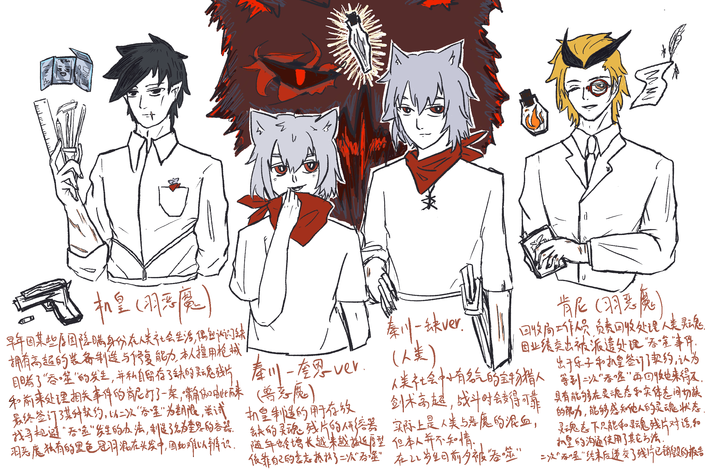

参加秦国主页822平行宇宙企划写的东西！
主机肯秦的排列组合！但是不是cp我也不好说
有恶魔社会存在的异世界设定
存在流血疼痛描写和某种程度的角色死亡
“机皇！”
随着木门吱呀的开合，悬在上方的风铃叮咚作响，却没盖过一同响起的清脆呼喊。屋内的三两路人纷纷侧目，位于视线焦点的灰发青年却视若无睹，轻快地从桌椅间穿过，而后坐到了一位手握报纸的黑发男性对面。
“难得见你准时。”直到这时，机皇才放下手中的报纸，转头熟稔地朝柜台后打了声招呼。他端起自己面前的咖啡，温度尚处于适口的范围，“这次有什么收获？”正说着，服务员上了杯咖啡厅里罕有的气泡饮料，冷气凝成薄薄的水雾，透明的冰块在杯中漂浮，不时碰到杯壁发出脆而轻的声响。
“别提了。”秦川咬着吸管，听到机皇的提问连连摆手。“我们这次去了东南面的废城，结果什么都没，就只有一个满是谜题的书库。他们说里面的笔记有什么重要意义，但是我啊，是一点没看出来。”如同为了泄愤般，秦川一口气把杯中的饮料喝了一半。“所以我就提前半天回来了。”
“哈，原来如此。”机皇轻笑几声，突然像是想起什么般扭身抱起一个包裹。“对了，这个给你。”
“这是什么？盔甲？”秦川略显疑惑地接过布包，发问的同时手上也没闲着，“机皇，这是你做的？”
“我调整了关节的灵活性和强度，下次记得穿上试试。”说话间，杯中的咖啡见了底。机皇重新摊开没读完的报纸，秦川却已经开始迫不及待地往身上比划并反复确认盔甲的各处状况。“谢谢机皇！”他正欲开口再说些什么，对面却飞快抬头打断了他的发言。见状，机皇倒也不恼，只是颇为欣慰地看着另一方发出声声惊叹，而后把视线转回到报纸的标题上。
“就当是你的生——”
啪嗒。
殷红而粘稠的液体飞溅到他的眼前，模糊了纸上的文字。痛苦的呻吟，嘶哑的低吼，以及店内其他客人的尖叫混作一团，让他从未迟缓过的反应慢了半拍。金属制的银白盔甲掉落在地，但此时它引起的声响已不值一提。他怔怔望着眼前发生的一切，仿佛在这一瞬间度过了数个世纪。错愕中，他对上一双赤红的眼，但那并非他所熟悉的眼睛。自口中钻出的兽型巨物缓缓站起，天花板被它撑出一个豁口，结满血块的毛发只能堪堪认出灰银的本色。起初仍在挣扎的青年在异物离体后再没了声息，他瘫倒在椅子上，散乱的前发毫无生气地垂在额前，上一秒还闪着光的眼睛此时已经紧闭。
尖叫声仍在持续，但周围的骚动似乎没能吸引到它分毫的注意力。血红的双眼中仅仅倒映着他对面的青年，巨物张开满是利齿的口，缓缓凑近那将它孕育出的躯体。
身体恢复控制的第一时间，机皇抽出随身携带的手铳，猛敲了一下右手，最后扣下了扳机。
“机皇，你要的货。”
柜台后，白发熊耳的年轻恶魔搬出一个木匣，而后推了推眼镜。匣中放着两排小巧精致的玻璃瓶，瓶中则封装着形态各异的焰型物质。机皇扫过一遍，点了点头，示意对方合上匣盖。在恶魔的城邦，人类的灵魂是最为司空见惯的一种货品。大大小小的商铺散落在城邑间，还有些流动商人行走在各处，专门出售古怪的稀有品类。食用，调味，锻造，装饰，这些小瓶几乎涉足了生活的各个方面。但对机皇而言，他所需要的材料并非常见的品种。他接过木匣，转而把一台便携终端放在柜台上。“对了，东西给你修好了，小心点用。费用的话，”他沉吟片刻，转头对不远处的一个人影喊道，“小秦，再去拿两瓶过来。”
“好嘞，那我肯定得选韦天这最贵的。”收到指示，本就支着耳朵的秦川不由得摩拳擦掌，话音未落便跑到标价最高的货架前张望个不停。而听到他的自言自语，韦天前一刻还在满脸欢喜地接过自己的宝贝终端，下一秒便拉下脸，形似不满地瞥向秦川，“怎么回事，这样对兄弟是吧？”话虽如此，他却没有从座位上站起，只是嗔怪两句便继续和机皇确认设备使用的一些其他事项，显出出一副习以为常的模样。
“就是因为是兄弟才拿的嘛，懂又不懂。”秦川一边回应着，一边在货架上搜寻自己的猎物。尽管机皇从来不把订购的灵魂作为食用的调料，但他倒是觉得加入之后的料理别有一番滋味。秦川拿起一瓶橙黄色的灵魂，如火焰般跃动的残片在昏暗的灯光下格外耀眼，甚至让他差点产生掌心发热的错觉。
这瓶放到火锅里应该味道不错。
“嘿，你，能听到我说话吗？”
突然传入脑内的人声让他手上一松，差点把东西摔在地上。秦川连忙打量了一眼机皇，幸而柜台方向的两人似乎都没注意到这边的骚动。稍稍松了口气，秦川重新端详起手中的灵魂，却怎么也没看出有什么异样。
“能听见就回一声。”那团异常活跃的残片又说话了，只是这次他握的足够紧，没再弄出额外的响动。
“你是什么玩意？”秦川转到货架后的视线死角，压低嗓子问道。
“简单来说呢，就是一瓶没处理好的残次品。”对方肆无忌惮的音量和散漫随意的语气让秦川确信只有自己能听到这个诡异灵魂的说话，“你懂的，那种失忆了又没完全失忆的类型。”
“所以，我被幽灵缠上了？”秦川用气音问着，余光瞥见机皇似乎已经结束了闲谈，正打算转身确认他选购的情况。说实话，他不太相信这种过于经典的人类游戏剧情展开会发生在现实之中，更不要提在放满灵魂的地方谈论诸如此类的怪谈会有多么可笑。但对方却用一个代表肯定的响指回答了他的提问——虽然他不知道那玩意是怎么做到打出响指的——而他自己，坦白来说，也不想错过这类超出日常的刺激事件。说不定还能吓韦天一跳，秦川想着，不由得咧开了嘴。
“那我要做什么，实现你的愿望、执念？然后你就会消失顺便给我留下奖励？“眼看机皇的视线投向了自己，秦川走出死角，低头佯作一副认真挑选的样子。可瓶中的灵魂却没立刻回答，如同在努力回想残余的记忆般不断上下翻腾，最后只是轻飘飘地抛出一句，“说实话，有点忘了。”
秦川攥紧了拳头，最终还是没把手里的玻璃瓶扔到地上。
“诶诶，你先别急。还真有件事要你帮我。”仿佛看穿了秦川心中所想，那声音连忙补上两句，“带我和机皇见一面，可能我就想起来了。”
突然出现的名字让秦川呆愣了半秒。自打他记事起，他便和机皇一起居住在森林边缘的这座小镇，而他可以肯定，自己从未听机皇提起过这样一号人——而且还是个人类。假如对方能偷听刚才的对话，那或许也能猜到他们的关系，但单从选中的人是机皇这一点来说，此人的身份也已足够诡异。
被鬼怪缠上的原来是机皇。不知为何，秦川莫名感到一丝遗憾。他顺势想象了一番画面，却只觉得怎么看都不像是会发生在现实中的事。
现在不是发散的时候。“你到底是什么人？”秦川回过神，驱散了脑海中无关紧要的想法，略微皱起了眉。
“如果你想问的是名字，那我确实可以回答你。”瓶中生物原本吊儿郎当的语气突然正经了起来，“我叫肯尼，这是我唯一能够肯定的记忆。”
夜渐深，机皇打开房门，刚刚放下木匣，便打算上到二楼确认各项实验机械的运作情况。只是，他还没迈出一步，就被秦川的一个猛冲拦住了去路，只得斜靠着楼梯扶手，甚至还没来得及开灯。
“怎么了？”机皇早已习惯秦川不时作出的惊人举动，他处变不惊地眨了眨眼，先摸索着摁开照明，再把视线落回到眼前的突发情况上。大概是意识到现在这个站位多少有点危险，秦川四处张望了一番，而后退回到一层的会客室，难得郑重地端坐在属于他的那张椅子上，抬头望了眼机皇，示意他一起下来。
这情况倒是有些少见。在机皇的印象中，秦川会有这种表现多半是闯了祸，还是特别大的那种。“说吧。”机皇顺手启动了桌上的显示模块，而后坐到了秦川对面。对方的眼神有些游移，连平时竖起的耳朵都有点耷着。他看着秦川从怀中缓缓拿出一瓶橙黄色的灵魂残片，突然产生了一种不妙的预感。
“机皇，你知道一个叫肯尼的人吗？”
“哎呀机皇，仔细一看，还真有点认不出来你是恶魔。”
几乎同时，一个有些过于轻快的男声在他脑中响起。对方语调间夹杂的笑意照旧辨不出几分是真，听见这熟悉的强调，他的手下意识覆上嘴角的疤痕。
“小秦，这是在韦天店里找到的？”看秦川的表情，他似乎也听到了那段仿若旧识般的单方面对话。机皇微微蹙眉，却只是用一个问题回答另一个问题。秦川点点头，但也没放弃打破砂锅问到底的念想。“你们是怎么认识的？”问完，他还特意看向手中的容器，“肯尼，你想起什么了吗？”
“有是有，但这部分还不清楚。”肯尼沉稳的语气还没维持一秒就又现出了原形，“我也挺想听的，机皇，讲讲呢。”
看来今晚是没法做其他事了。机皇轻叹一声，转身接了两杯水放在自己和秦川面前，而后坐回转椅上，任凭显示模块自行进入休眠状态。他一手捧着马克杯，一手轻敲扶手，思考着该从哪里说起。
“我和肯尼，是在一家咖啡馆认识的。”以这句话为开始，那些早已被他封存的往事重新涌上记忆的海岸。“那时候我在人类的某个城镇上开了家工坊，每天替他们修理武器和各类装备。只是没人知道我的身份。”
“然后呢？我可不是战斗的那块料，又怎么会在咖啡馆认识你？”
“你来找人，人没找到，倒是抓上了我。”机皇润了润嗓子，接着讲道，“但到最后你也没见到那个人，之后——我们就没见过面了。”
听见故事戛然而止，秦川恍然抬头，脸上还有些没反应过来，“就这么结束了？”他看向手中的肯尼，如同想把对方摇醒般晃了晃瓶身，“肯尼，还你记得当时要找谁吗？”被询问的那方不知是有意还是无心，先打了个哈欠才懒懒开口，“不知道啊，我都不记得这回事了。但肯定不是机皇。”说完，它还在狭小的瓶中来了个后空翻，“说不定是你呢？”
“怎么可能。”机皇放下水杯的力度加重了一点。
“怎么可能啊肯尼，我既没见过人类，也从来没去过什么咖啡馆，别说笑了。”秦川对肯尼的假说第一时间提出了异议，而对方只是耸了耸并不存在的肩膀，嗤笑一声，“哎呀，开个玩笑而已，说着玩的。”说起肯尼的记忆，两人又开始有一搭没一搭地聊起来，很难想象，他们相处的时间仅仅不到一个小时。
“好了，言归正传。”机皇把闲聊重新引回正题，“你想要做什么？”他双臂交叉，打量着在瓶中翻腾的不明生物，微眯起双眼。“不管怎么看，你的出现都非常可疑。”这绝不可能是什么意外。
听见机皇的反问，秦川刚刚还在说笑的神情僵硬了片刻。“机皇，你在怀疑肯尼不是好东西？”
“如果有必要，我会让回收局来处理他。”残留记忆的灵魂，这要是被那群人知道了，负责人指不定会受到什么处分。但那些后果都与他无关，他唯一需要的，便是排除一切有可能打破正常生活的不稳定因素。
秦川嘴角的笑容淡了点，换上和他并不相符的为难神情。时针早就跨过新一天的边界，他的视线在玻璃瓶和机皇的身上来回打转，空气也在沉默中逐渐凝固。但为他们所讨论的核心人物却像是没意识到这份微妙的氛围般，轻而易举地插入了话题。
“太早下结论了，机皇。”肯尼的声音悠闲得不像是自己的第二次死亡即将被他人决定。“我还真有事找你。”听到肯尼开口，秦川有些惊讶地眨了眨眼。“你又想起什么了？”
“嗯。不过这件事——说来话长。”
“小秦，时间不早了。”听出对方的弦外之音，机皇自然地接上话头。他的声音依旧平稳，态度却不容置喙。像是怕对方不放心般，他又补充道，“肯尼的事，我会去调查。他会暂时留在这里。”
秦川的动作仍有些纠结，但最终仍然把手中的瓶子放到机皇桌前，接受了提议。他飞快和机皇道了句晚安，三步并作两步跑到楼上，仿佛刚刚的僵持丝毫没影响到他的心情。仅剩一人的客厅在苍白灯光的映射下显得格外空寂，听见楼上的关门声，机皇拿起桌上的玻璃瓶，指节因用力而有些泛白。
“小心点，可别把我摔碎了。”
“哈，故事编得挺好。”良久，机皇才把瓶子重新放回到桌上，而后调暗了室内的灯光。“你不嫌里面挤吗？”黑暗中，橘红色的灵魂如同行将熄灭的余火，在并不存在的风中摇动。
“诶，我可没说一句假话。”肯尼对自己受到的评价颇为不满，不禁反驳道。而机皇不得不承认，自己的确无法否认对方的陈述，这也是让他最为头痛的一点。无论是因为他们身为同类，还是对方自身具有某种才能，肯尼总是能看穿他的接受底线，而后做出那些他不得不默许的事。而这次意料之外的相遇，又带上了另一层让他愈加烦躁的意义。
“这么多年了，有进展吗？”玻璃瓶的木塞悄无声息地从瓶口脱落，随之涌出一缕炽热的橙烟。烟雾中，一名金发男子无声地打了个哈欠，而后理了理有些凌乱的碎发，顺便微调了脸上单片镜的位置。“你就没想过告诉本人？”
“你不必知道。”机皇不动声色地拍掉搭在自己肩上的手，转而打开显示屏翻阅最新一次的检查报告。更新到现在，容器的融合度已有所提高，但——
完全不够。
机皇闭上眼，揉了揉眉心，刺目的矩形光晕仍残留在眼前。他很清楚对方的出现意味着什么，只是那一刻来得比他想象中快得多。
还有机会。新一轮的检查就在明天，也许还有调整的可能。
“话说回来，你有没有想过，为什么那件盔甲找不到了。”突然，肯尼抛出一个没头没尾的提问。紧接着，窗外响起物体下落掠过树叶的窸窣声响。
咚。
机皇猛地睁开眼，对上的却是肯尼在黑暗中晦暗不明的双眸。来不及思考对方笑容的深意，他一个箭步冲到窗前，看到的却仅剩模糊不清的人影。
“真遗憾，”肯尼耸了耸肩，仿佛又一次看穿了他心中所想，“看来是我赢了。”
森林北面的石堆，应该就是这里。秦川一面默念着从肯尼口中获知的地理方位，一面穿过树木丛生的密林。清冷的月光勾勒出林木朦胧的轮廓，手中的提灯也因能源将尽逐渐昏暗。尽管他自诩对这片森林比任何一个人都要熟悉，但找到指定的地点仍花了他不少时间。以前这里有这么多石头吗？秦川思考了两秒，最终仍是好奇心战胜了困惑。得赶在机皇找到自己前回去。移开堆垒在泥土上的石块后，秦川解下背在身上的铁锹，挖开了第一铲土。
对了，我还要告诉你另一件事。回家的路上，肯尼对他如此说道，而后告知了那个模糊而诡异的地址。天亮以后就会消失的宝物，这听上去不合常理，但和他今晚的经历相比倒也没那么不同寻常。搞那么神秘做什么。想起自己隔着门板听见的断断续续的谈话，秦川用力地挖出一锹土，对于自己无从得知具体内容愤愤不平。现在想来，他没有用一贯的伎俩溜下二楼，而是一跃而下打断对话，或许也有一部分感情作祟的原因。不多时，翻出的土在浅坑旁堆成了新的土包，又一锹下去，意料外坚硬的金属质感却把秦川差点震退了半步。
盔甲？挖出大概的形状后，秦川扔下铁锹，直接把坑中的东西刨了出来。拍去大部分泥土后，银白色的肩甲在月光下光洁如新，反射着皎洁的光芒。关节的连接处也兼顾灵活性和保护性，一眼便能看出制作者的用心。
但是，自己为什么会知道这些？
赞叹的心思烟消云散，秦川呆坐在地上，死死盯着手中的盔甲。他本以为胸甲上的污渍仅仅是湿润的泥土，可接触到的瞬间，他便发现，那黑色的结块是凝固的血污。
一种强烈的即视感朝他袭来。他从来没接触过盔甲，却能一眼看出这件东西的好坏；他从没得到过这样一件礼物，却似乎仍记得双手接过时它的手感与重量。他不可能留下这种痕迹，但看到那滩血渍的瞬间，撕裂般的疼痛从他体内传来，仿佛他曾亲身体验。
“唔……”而后秦川意识到，那并非他的所谓想象。沉重的银甲从他手中滑落，他半跪在地上，难以自制地蜷起身子，仿佛如此便能缓解如洪水般涌来的痛觉体验。混乱而破碎的记忆让场面愈加失控，他的额头死死贴着胸甲的一处凸起，留下显眼的红痕，陈旧的铁锈味伴随着他的喘息渗入鼻腔，恍惚中他感觉某种温热的液体正从自己的脸上淌过。
这是……怎么回事。秦川挣扎着想要站起，四肢的肌肉却像是飞速溶解般脱了力。他用余光瞥见左手的腕带闪着刺眼的红光，而后不合时宜地想起明天要进行的身体检查。自腹腔涌起的高温将一切组织重塑，胸口间发的剧痛让他下意识抓扯领巾，企图扯开那双扼住他咽喉的无形之手。快点站起来。在疼痛的间隙，他摸索着握住被扔在一旁的铁锹，几番尝试后终于支撑起半弓的身体，在地上留下数道乱且深的划痕，掌心也被锹身的木刺拉出细小的血丝。一步，又一步。秦川强忍住反胃的欲望，踉跄着朝来时的方向走去。被汗水浸湿的前发遮蔽了大部分视线，他不得不眯起眼以看清道路，却感觉眼皮也越发沉重。视线逐渐变得模糊不清，他用力迈开双腿，但似乎只是在原地踏步。
算了，就这样吧。在阖上双眼的前一刻，他看到了在林木间闪烁的橘黄光点。
看到现场的瞬间，机皇体内的血液凝固了一刻。
没多想，他一把扔下提灯，一个箭步冲到伏在地上的人影旁。冰冷的身体，紧闭的双眼，嘴角干涸的血迹，夜晚的寒气顺着脊柱窜入他的后脑，让他打了个激灵。不远处，一件熟悉的盔甲丢在地上，新旧血迹交叠其上，在月光下显得格外刺目。
突然，他的袖口传来轻微的拉扯。机皇低下头，俯身凑近秦川微动的嘴唇，却没听见任何声音。而后，如同全身气力都被耗尽般，原本堪堪勾住他衣袖的右手滑了下去，毫无生气地垂在地上，监测腕带的指示灯也全数熄灭，陷入死一般的沉寂。
这和他想的不一样。
“好了，把东西给我。”肯尼突然出现在他身后，眼角多了几处淤青，手中却还拿着一本类似日程本的小册子。工作完成，他没抬头，伸出的手却径直对上冰冷的枪口。
“我劝你不要说话。”
物理伤害自然威胁不到他，但察觉到对方异样的态度，肯尼还是闭上了嘴。他上前几步，很快察觉到事情并没有他以为的那么简单。
“’吞噬’没有发生？”他环顾四周，和当时的情况相比，今晚的现场有些过于干净。
更重要的是，和他预料中不同。装载灵魂残片的容器没有遭到任何致命性的破环。
无人回答他的提问，而他们本来也并非能够平和讨论的关系。不顾手臂的伤口堪堪半愈，机皇单手把少年抱起，举枪的手却一直没放下来过。经过肯尼身边时，他仅仅铁青着脸，抛下一句没头没尾的话，便朝林外走去。
“我们都输了。”
对灵魂的感知能力让肯尼立刻猜到了答案。“吞噬”的确发生了，但它被限制在了那具躯体内部。登记名为缺的灵魂残片的确已经消失，但从某种意义上来说，它已经渗入盛放它的容器中的每一个角落，开始以另一种形式存在。
“有意思。”从生死挣扎中诱发诞生的灵魂，的确是他们从未考虑过的影响因素。这下可不能怪我。肯尼自嘲地笑笑，往工作手册里添了两行，而后把笔一扔，任其消失在空气中。而他也不再有追上去的理由。肯尼拾起被遗落的盔甲，残存的暴戾气息捕食般缠上他的指尖，却在接触到的瞬间烟消云散。他稍稍用力，早已腐朽的铁甲在他手中化成无数碎片，铁锈与血迹混杂在一起，成为月光下的黑色星点，连一点痕迹都没留下。
“机皇，东西我放这了。”身后传来货箱落地的轻微震动，机皇放下手中的机械，转身便看到秦川正矮下身子在冰柜里翻找着什么。他站起身，将货箱中的玻璃瓶一一分类放入橱柜，不多时便听见碳酸饮料的开罐声如期响起。他取出一瓶残片，正准备用作试验，秦川却已经拿着汽水凑到了工作台前。“这是什么？盔甲？”他颇为讶异地看着台上的半成品，忍不住用空着的那只手碰了碰表面。“机皇，你还会做这个？”
“当然。”穿过秦川让出的空位，机皇回到桌前，“完成了还要找你测试。”
“包在我身上。”秦川大手一挥，喝空的易拉罐在桶中发出清脆的声响。楼下传来韦天远远的呼唤，秦川从窗台探了个头，飞快地打了声招呼便往外奔去。急促的脚步逐渐远去，瓶身闪动的倒影重回平静，他向后仰倒，对光端详着手中的玻璃瓶。
“真可惜，看来他真的听不见我说话了。”
本该如此。
机皇没有做出任何回应，只是将装着橘红残片的瓶子放下，重新拿起了桌上的组装器械。阳光透过木窗洒进屋内，在银白色的金属上折射出夺目的金色光芒。
其实本来是打算扣题（？）设计一个在一切猛男寨时空里都会发生的吞噬事件 不过这个设定要展开就太广了遂作罢
822吃得好爽 好多香香饭
最后附一些简要的设定介绍
